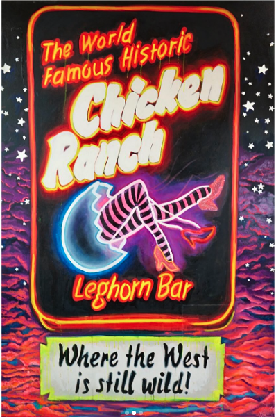

"Club V"
Ford Gallery PDX
March 2025

Chicken Ranch, 2023
This creative journey is a deliberate act of reclamation and illumination, bringing to the forefront subjects traditionally shrouded in societal obscurity. They strive to create immersive work that provokes reflection and dialogue. Through the interplay of light and dark, this work seeks to illuminate the resilience and power inherent in women's narratives, transforming the hidden into the celebrated.
Incorporating elements of psychedelia not only pays homage to the countercultural movements that challenged societal norms but also serves as a vehicle for exploring altered states of consciousness as a connection to feminine power and the Goddess. The vivid, swirling patterns and neon hues are designed to captivate and transport, encouraging a reevaluation of the hidden and often suppressed aspects of women's experiences.